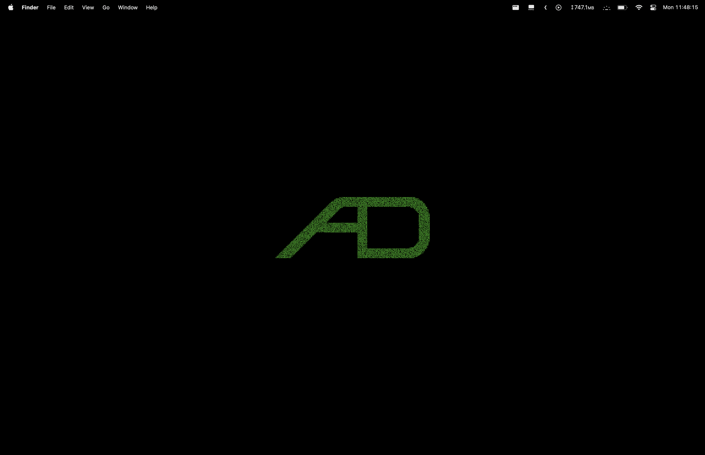
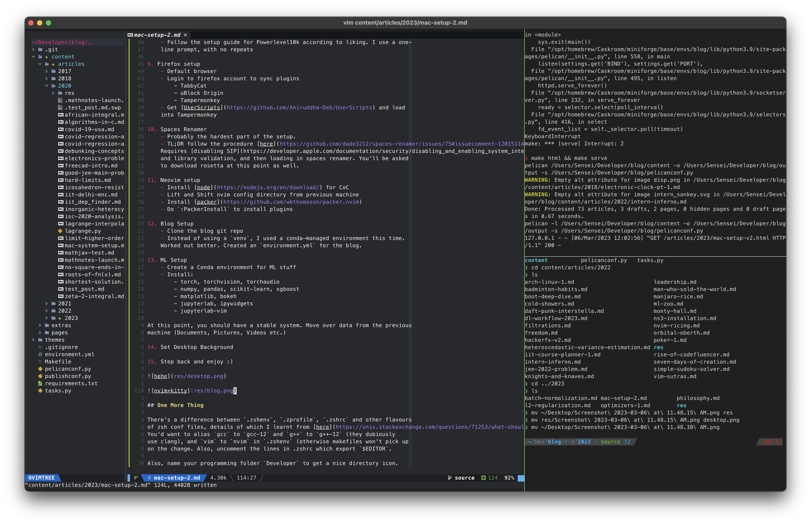

Mac Setup v2
Posted on Mon 06 March 2023 in Programming
My 2015 MBP 13" was giving me some pain over this entire semester, lagging a lot and being very slow overall. I recently upgraded to a 16" MBP, and there have been no complaints so far :) the notch is simply not there if you have a black desktop background, so +1 to apple for that. Although face ID would have been nice to have.
Setup
-
Basic intro Screen
- Dark Mode

- Don't set up Siri, or Stage Manager
- Dark Mode
-
Home Directory and Username renaming
- MacOS uses a lowercase first letter, even if you've input an uppercase one while making your username. The way to change this is a bit complicated, but follow the instructions here
-
System
PreferencesSettings- Turn off autocorrect
- Function keys are function keys, and not 'do weird stuff' keys
- Don't switch to a workspace which has an open window of the application
- Make 10 workspaces and activate all the ^(n) hotkeys to switch to them
- Change the date/time format to
Day HH:MM:SSin control center - Remove some stuff from control center, put keyboard brightness there
- Turn off the 'quick note' bottom right hot corner
-
Accounts
- IITD
-
Applications
- XCode CLT
- Firefox
- VS Code (don't use this much)
- Kitty (with the cuter icon)
- Calibre
- TG Pro
- The Unarchiver
- Shottr
- Hidden Bar
- TinkerTool
- Hide dock, and delay in showing it
- Remove 'recent apps' section in Dock
- Rectangle
- Bandwidth+
-
Brew Packages
- Neovim
- htop
- gcc
- openmpi
- miniforge
-
Kitty Setup
- Download the Meslo zipfile from here, and install all the fonts.
- Copy over the
kitty.conffrom my previous machine. Works out of the box (just darkened the background a bit more, as the new mac has a brighter display)
-
- Install Powerlevel10k after this
- Follow the setup guide for Powerlevel10k according to liking. I use a one- line prompt, with no repeats
-
Firefox setup
- Default browser
- Login to firefox account to sync plugins
- TabbyCat
- uBlock Origin
- Tampermonkey
- Get UserScripts and load into Tampermonkey
-
Spaces Renamer
- Probably the hardest part of the setup.
- TL;DR follow the procedure here. Requires disabling SIP and library validation, and then loading in spaces renamer. You'll be asked to download rosetta at this point as well.
-
Neovim setup
-
Blog Setup
- Clone the blog git repo
- Instead of using a
venv, I used a conda-managed environment this time. Worked out better. Created anenvironment.ymlfor the blog.
-
ML Setup
- Create a Conda environment for ML stuff
- Install:
- torch, torchvision, torchaudio
- numpy, pandas, scikit-learn, xgboost
- matplotlib, bokeh
- jupyterlab, ipywidgets
- jupyterlab-vim
At this point, you should have a stable system. Move over data from the previous machine (Documents, Pictures, Videos etc.)
-
Set Desktop Background
-
Step back and enjoy :)


One More Thing
There's a difference between .zshenv, .zprofile, .zshrc and other flavours
of zsh conf files, details of which I learnt from here.
You'd want to alias gcc to gcc-12 and g++ to g++-12 (they dubiously
use clang), and vim to nvim in .zshenv (otherwise makefiles won't pick up
on the change. Also, uncomment the lines in .zshrc which export $EDITOR.
Also, name your programming folder Developer to get a nice directory icon.
EDIT (9 Mar): Moved from CoC to nvim-lspconfig and cmp-nvim, and to
treesitter-based syntax highlighting. Feels marginally better, and got the
chance to hack at my vim config after a long time.